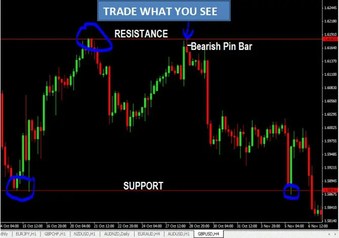
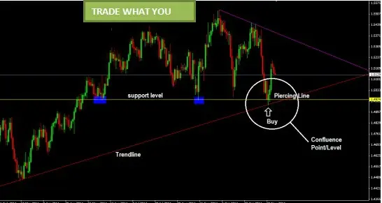

TRADE WHAT YOU SEE
I hope you now understand the potency of price action trading. Now, not every trading setup you see will end up
being profitable.
The fact is that you will always be ahead if your losses are little and your gains are substantial. Trading risk
management is crucial for this reason. You must see and trade the obvious when looking at the chart for trading
setups.
Why do I say that?
You should be aware that thousands of traders are watching the exact same thing as you are if there is an obvious
pattern on the chart that you can see plainly, due of how obvious it is.
They see what you are seeing, Example:
● If you can spot bullish pin bars forming on important support levels or trendlines or channels, many other people
will be able to as well.
● All of these traders will be watching what occurs at these levels in order to predict what will occur next if a bullish
hammer forms on a significant support level. The most likely result of such is that the price will soar as soon as the
hammer candlestick's high is broken!
Trade What You See

How often
have you ever reviewed your chart and thought:
"Oh my goodness! The market should have moved after the bearish shooting star candlestick formed after reaching
the resistance level, hence I should have entered a trade at this point.
Trading what everyone else sees, or trading the obvious, is essentially piggybacking on the market movement that
all these orders cause, which increases your chances of success.
Look at the chart below to check if a major support level is present, the price is moving toward it, and at the same
time, an upward trendline coincides with that support level…

Why does this matter? Confluence, my friend! Then, just at the point of convergence, a bullish Piercing line reversal
candlestick appears.
Will you consult stochasticks or the CCI indicator if you're unsure about this price signal in order to be absolutely
certain that you need to buy?
Really!!
NO need at all, Simply trade what you see!!!
Conclusion
Some lessons I've picked up:
Levels are not permanent lines in the ground; they can be broken. You see, a level will eventually become broken
the more times it is tested. According to my findings, this happens about 2-3 times on average; after that, the level
should break out.
Never pay attention to analysts . They may interfere with your ability to make decisions and impair your judgment.
I see a sell setup on my chart, for instance, but I'm hesitant to act because I've read the analyst's report, which states
that he is bullish on this currency pair for this and that reason. When I review the chart afterwards, I can see that I
would have made money if I had sold. So, depending on what you observe on your charts, use your own
independent opinion.
Find your ideal trading timeframe. What timeline you can choose may depend on your personality, your job
situation, etc. Because I use multitimeframe trading, I can trade from the 4hr, 1hr, down to the 5 & 1 min charts.
There will be many who argue, "You're crazy to trade on the smaller periods like the 5min and 1min because there's
too much noise in the smaller timeframes," and it's true. I am aware of that. I switched to lower timeframes with one
goal in mind: to get stronger trade entry. You don't need to do that; that's just how I roll.
If the bus departs from you, don't try to catch it . avoid chasing trades. If you recognize that you could "lose out"
on a trade because you were slow to enter it at the right time, step back and wait. There will always be another
chance, or you can wait for a pullback, retrace, retest, etc. before entering.
Wait patiently for the ideal trading setups to materialize.
Take a break if you are loosing serially. Take a week break from trading to get your thoughts straight, then come
back ready to trade.
If you have parallel winning streaks, resist the need to take on additional risk. You might soon have a losing series.